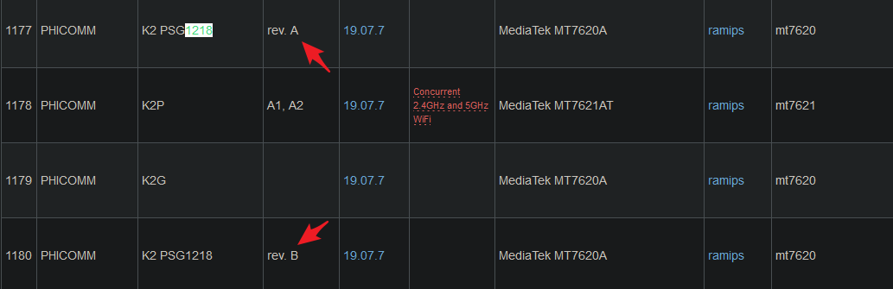
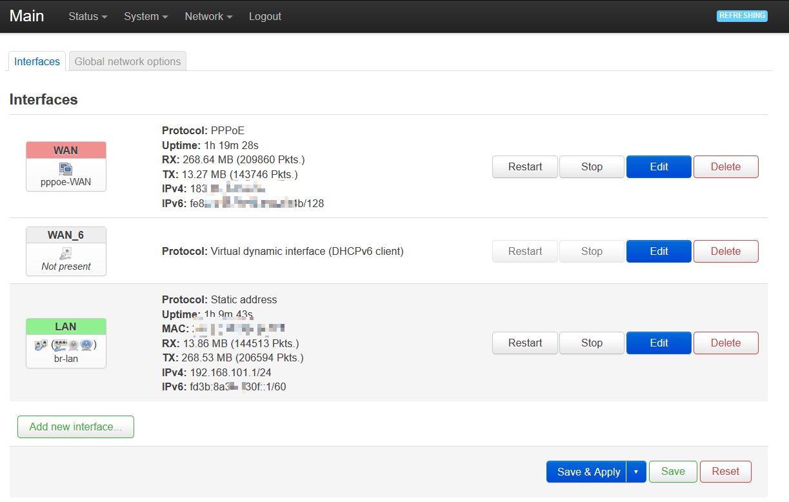
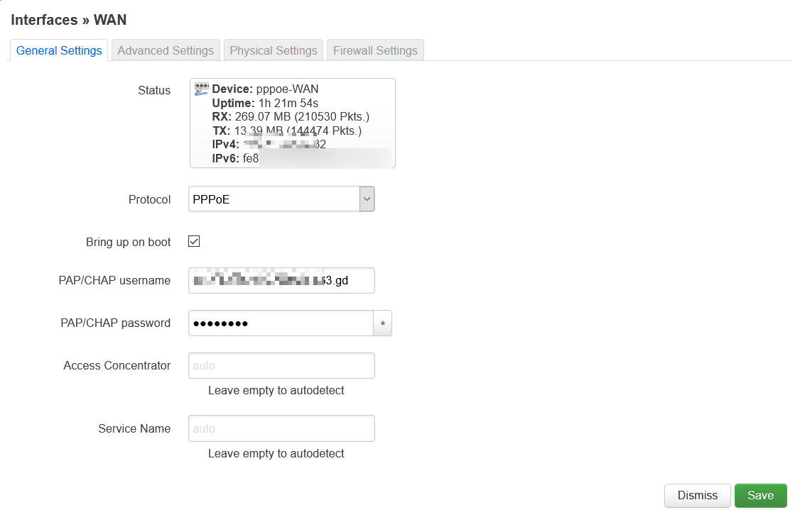
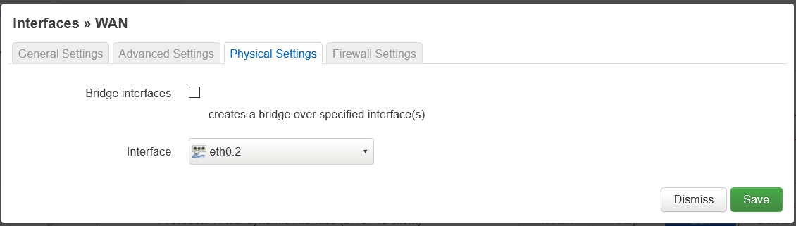
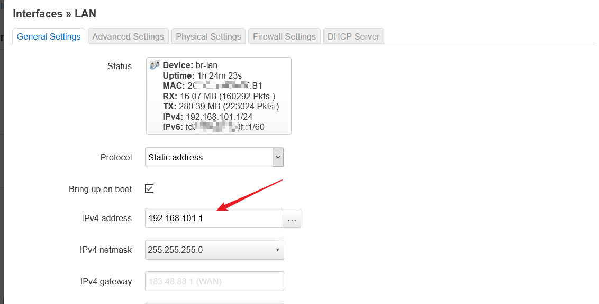
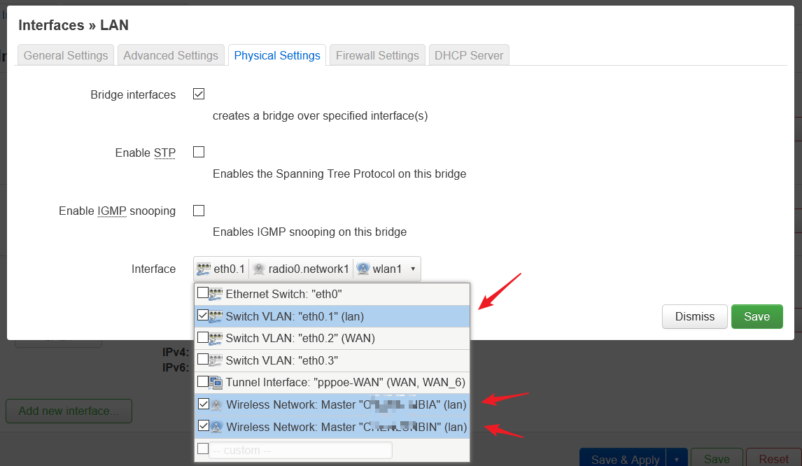
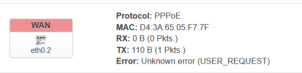
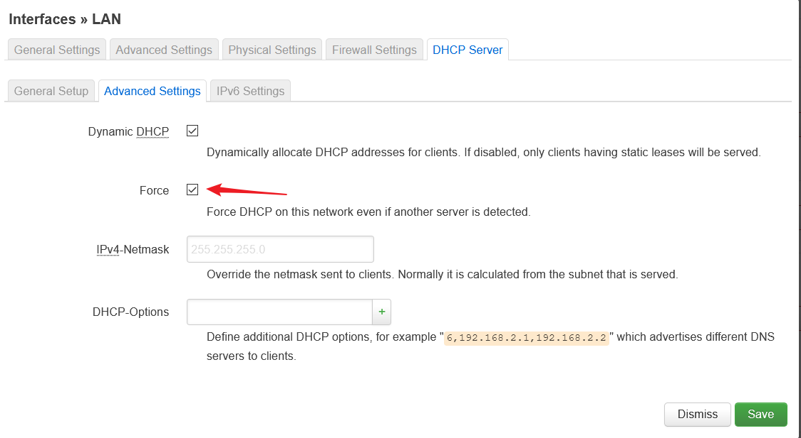

最近弄到了一个斐讯 K2，打算刷个 OpenWrt 来作为主路由，中间折腾了些，写篇博文记录一下。
刷机
K2 这台路由器的刷机资源是很丰富的，从 OpenWrt 官网支持的情况可以看出。有如下的固件可以挑选
华硕的老毛子 Padavan、纯净的华硕 Padavan、Tomato Phoenix 不死鸟固件、PandoraBox 潘多拉盒子、OpenWRT
下载的时候，需要注意版本：
A版是K2固件，官方说明：https://openwrt.org/toh/hwdata/phicomm/phicomm_k2_psg1218，根据说明A版有5个Ethernet ports，对应K2。
B版是K2C固件，官方说明：https://openwrt.org/toh/hwdata/phicomm/phicomm_k2_psg1218_rev.b，根据说明B版有4个Ethernet ports，对应K2C。

我拿到的这个已经刷好 breed 和 潘多拉固件。可能第一次接触路由器刷机的人不知道 breed 是啥。通俗解释就是：相当于安卓机上的 recovery。（看到有人说是 bootloader，但我个人习惯理解成 recovery）
Breed 是由 huzibbs 开发的一个号称“刷不死”的引导加载器，相当于手机上的 bootloader。
刷机的教程可以参考如下链接。Ps：我个人是很不喜欢这个 breed 的，网上的教程基本都是围绕这个东西来的。我没找到像手机那样线刷的教程，无奈。。。而且，那个方便你刷入 breed 的助手软件 Windows 会报毒。后面有时间找找用救砖的方式，能不能实现线刷
有些固件，像 OpenWrt，可以直接在里面刷其他的固件，而不需要通过 breed。但是有些就不行，像老毛子的 Padavan。
OpenWrt 系统摸索
OpenWrt 相对于其他系统没有预置太多的功能，界面也很简单，适合喜欢折腾的人。
- 系统默认是英文的。这几天摸索下来，已经习惯了，不打算换中文了。网上有换中文的教程
- 网页界面有防错机制，每当应用了新的修改后，有 90 秒倒计时。如果不能在此时间内再次访问 Web 管理界面，设置会自动回滚到修改前。人性化的设置。但是也有一点要注意：如果修改了 lan 的网段，请记得动作要迅速一点，用新的网段地址访问，不要用旧的地址不停刷新 Web 管理界面了！
Interface
这个项目下面主要有 WAN LAN 两个子块。顾名思义，这两个就是设置你外网和内网的

WAN
WAN 这一块，是设置如何连接上级网络的。如果你路由器直接连接光猫，光猫设置了桥接模式，那这个我们可以用路由器直接拨号（如下图）。拨号我们直接在 WAN 下进行就行，那个 WAN_6 暂时可以不用管。协议选 PPPoE。然后填写运营商的账号和密码。

如果你家里已经有一个路由器了，你打算扩展网络，这里的协议你可以选择 DHCP。
在 Physical Settings，Interfac 我们选择 eth0.2。这个因人而异。其实这个 eth0.2 是一个 VLAN，后面我会介绍一下它。这个就是绑定WAN 这个配置到具体的物理接口。

LAN
这块是配置你内网用的，我们可以在这里修改我们内网的网段。一般光猫或其他路由器会占用 192.168.1.0/24 这个网段，我尽量避免冲突，这里设置了 192.168.101.0/24 这个网段。
下图 192.168.101.1 是这个路由器 LAN 的网关地址。子网掩码我们默认就行 255.255.255.0。

同样，我们在 Interface 选择需要绑定的接口，这里我选择了路由器后面的网线接口，2.4G 无线，5G 无线这三个接口。

DHCP 的某些设置也是在 LAN 这个块里。
Wireless
这块你可以设置路由器的无线模块。
2.4G & 5G 相同的 SSID
引用恩山论坛的结论：
WIFI名字改成一样的，然后在无线安全里把802.11r 快速切换打开就行了。只要是支持802.11r 就没问题
一些扩展：关于Wi-Fi漫游的一些Tips
Switch
这里可以设置路由器的 VLAN，详细可以参考下面的文章。我就不重复造轮子了。
上面连接访问不了，点击浏览离线版本：
离线版本
Bugs
OpenWRT 一开始死活拨不上号，一直报下面的错误。后来给 WAN 绑定了另一个小米牌子路由器的 Mac 地址，奇迹般的可以了，也不知道是为啥。电信送的小米的 3C 路由器。。。

无线连接突然无法获取 IP 地址。最终解决方法是：打上 Force 的勾，然后重启 LAN 服务

电信拨号的一点小常识
猫的默认账号密码
贴在光猫底下的 useradmin，只能改改 WiFi 之类的设置，很是鸡肋。如果要改动物理网口的连接模式，还需要进入超级管理员界面。我这边很幸运，用的是默认的密码。如果不是，自己 Google 破解的方法或跟安装师傅要。
实测 TEWA-600AGM 可行。
超级用户：telecomadmin
密码：nE7jA%5m
获取外网地址
一般电信会分配给你 100 打头的 IP 地址，那个是内网地址来的，具体可以参考这篇文章。如果需要外网地址，又不想打电话投诉之类的，有个简单的方法，
账号名加上 pub 或 vip。如下：
gzDSLxxxxxxxx@163.gd 变成 gzDSLxxxxxxxx@pub.163.gd 即可